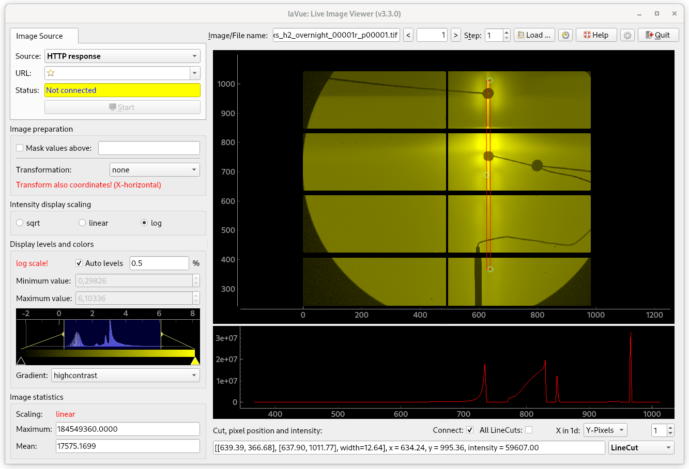

LineCut Tool¶
LineCut Tool selects Line Cuts and shows their 1d intensity plots

X in 1d: Points, X-Pixels, Y-Pixels
All Cuts: displays all cuts on the 1d-plot
The width of the line-cut can be set the handle in the middle of the line-cut selector.
The configuration of the tool can be set with a JSON dictionary passed in the --tool-configuration option in command line or a toolconfig variable of LavueController.LavueState with the following keys:
x_coordinates (points, x-pixels or y-pixels string), cuts_number (integer), all_cuts (boolean)
lavue -u linecut --tool-configuration \{\"cuts_number\":2,\"x_coordinates\":\"y-pixels\",\"all_cuts\":true}
A JSON dictionary with the tool results is passed to the LavueController or/and to user functions plugins. It contains the following keys:
tool : “linecut”, imagename (string), timestamp (float), unit (str) [i.e. “point”, “x-pixel” or “y-pixel”], nrlinecuts (int), linecut_%i ([[float, float], …, [float, float]]) [i.e. “%i” goes from 1 to nrlinecuts]